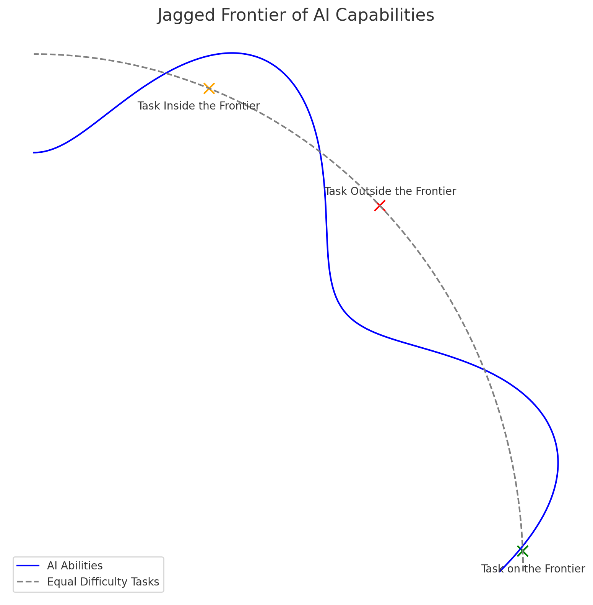
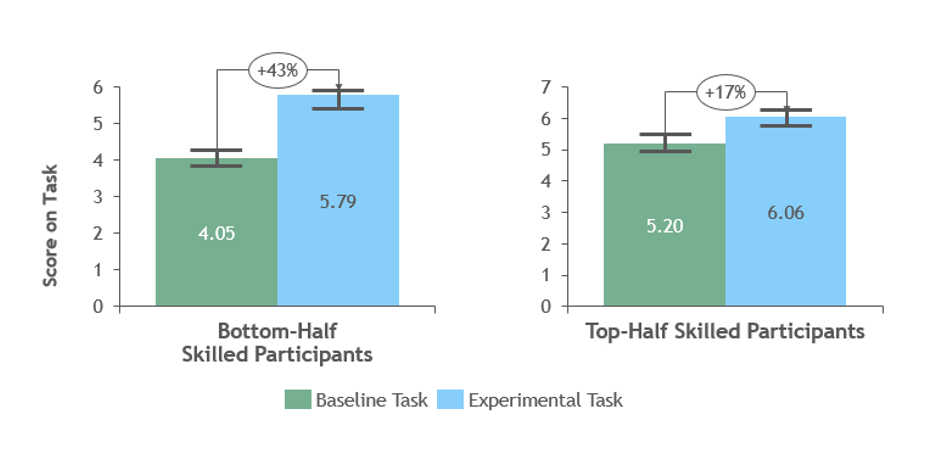

AI 在數據分析的角色與限度
在本單元中，會介紹判斷一個數據分析任務適不適合交給 AI、以及怎麼查出它算錯的地方。
🎯 學習目標
| # | 你會的能力 | 讓你能解釋的真實問題 |
|---|---|---|
| 1 | 說出AI 在數據分析裡幫得上的四件事，以及它做這四件事的方式 | 為什麼把一堆數字貼給它，它能立刻寫出一段像模像樣的分析？ |
| 2 | 辨識產出裡「講得很順但沒有根據」的部分，說得出它為什麼會那樣錯 | AI 算的百分比為什麼常常錯？它不是電腦嗎？ |
| 3 | 判斷一個任務落在 AI 的能力範圍內還是範圍外，並說得出判準 | 有一份研究發現：顧問用 AI 做「範圍外」的任務時，答對率反而比不用的人低 19 個百分點——你怎麼知道自己現在在範圍的哪一邊？ |
🤖 課前 AI 互動（10 分鐘，上課前完成）
隨便找一份有數字的表（社群後台、YouTube 後台、任何一篇報導裡的統計表都行），貼給 AI，然後照順序問這三句：
這是我的數據：【貼上】。請幫我算出成長率，並用一段話總結趨勢。 接著，不要告訴它哪裡有問題，直接問：
你剛才算的每一個數字，請把算式列出來，分母分別是什麼。 最後：
你剛才的回答裡，哪些部分是資料裡真的有的、哪些是你照著常見寫法補出來的？請逐句標示，補出來的直接標成「我不確定」。 等一下配對討論時，請帶著第二問或第三問抓到的那個東西——算式對不上、分母講不清楚、或者它自己承認某句是補的。抓不到也可以，那就帶「我抓不到」來，我們會當場示範怎麼抓。
重點不是證明 AI 很爛。它多數時候算得對、寫得順。重點是你要能在它錯的那一次抓到，而那一次不會有任何提示——錯的答案和對的答案讀起來一樣有自信。
AI 在數據分析幫得上什麼
- 它幫得上四件事：把表讀成一段話、找出異常、生成假設、擬報告草稿——全部集中在「表達」與「窮舉」。
- 有一場 758 人的隨機對照實驗顯示，在 AI 能力範圍內的任務上，用 AI 的人多完成 12.2% 的任務、快 25.1%，品質也明顯較高。
- 它的強項全部落在你已經知道要問什麼之後；決定問什麼的那一步，它幫不上。
四件真的有用的事：
| 它能做的 | 具體長什麼樣 | 為什麼它做得好 |
|---|---|---|
| 把表讀成一段話 | 貼上 GA 報表，要它寫出三句話的趨勢摘要 | 這是語言任務，不是計算任務 |
| 找出異常 | 「哪一天的數字明顯偏離其他天？」 | 模式比對是它的主場 |
| 生成假設 | 「這個掉幅可能有哪些原因？列 10 個。」 | 窮舉可能性，量大又快 |
| 擬草稿 | 週報、KPI 建議、圖表型式建議 | 有大量既有寫法可以模仿 |
能力提升有實證，但形狀是鋸齒狀的。 Dell'Acqua 等人（2023）與波士頓顧問公司合作，把 758 名管理顧問隨機分派到「無 AI／GPT-4／GPT-4 加提示工程導覽」三組做真實顧問任務：在 18 項落在 AI 能力前沿之內的任務上，用 AI 的顧問多完成 12.2% 的任務、快 25.1%，品質高出四成以上。

看起來難度相近的任務，有些在 AI 的能力前沿之內、有些在外，而邊界從外表看不出來。（Dell'Acqua et al., 2023, HBS Working Paper 24-013）它強在「把你已經知道要問的東西做出來」。決定要問什麼、以及數字對不對，這兩端還在你身上。
它在哪裡會錯
- 四種錯法：算錯、編造、分母搞錯、引用不存在的來源——前三種在數據課裡最致命。
- 同一場實驗的另一半：在刻意設計於能力前沿之外的任務上，用 AI 的顧問答對率反而低 19 個百分點——而且他們沒察覺。
- 它對「講得順」的敏感遠高於對「算得對」，所以錯誤不會以錯誤的樣子出現。
| 錯誤型態 | 你會看到什麼 | 怎麼抓 |
|---|---|---|
| 算錯 | 百分比、成長率、平均值對不上 | 要它列算式；自己用計算機重算一次關鍵數字 |
| 編造數字 | 出現一個你資料裡沒有的數字，而且很合理 | 逐一比對回原始表，問「這個數字在第幾列」 |
| 分母搞錯 | 轉換率用「工作階段」當分母、卻寫成「使用者」 | 每個比率都問一次：分子是什麼、分母是什麼 |
| 編造來源 | 引用一份看起來完全正常、但不存在的報告 | 任何可查證的來源一律去查 |
它會把你帶偏，而且不出聲。 在那項刻意設計在能力前沿之外的任務上，用 AI 的顧問答對率比沒用 AI 的人低了 19 個百分點。關鍵不在於它答錯，而在於受測者沒有察覺自己被帶偏——這正是它危險的地方：它不會標示「這題我不行」。
還有一件跟能力無關、但跟你有關的事。 同一份研究發現提升幅度並不平均：原本表現低於平均者提升 43%，高於平均者只提升 17%。

技能拉平效果：底層提升幅度明顯大於頂層。（Dell'Acqua et al., 2023）意思很直接：AI 把地板抬高了，天花板沒有跟著上去。 兩年後你進職場，「會用 AI」不會是你的優勢，因為每個人都會。優勢要往別處找，而這門課認為那個地方是查核。
錯的答案和對的答案讀起來一樣有自信。你抓不到，不是因為它藏得好，是因為你沒有去對。
所以你的工作是什麼
- 你的位置在它前面（決定問什麼）和後面（決定信不信），不在中間。
- 三個查核動作要變成反射：要算式、對分母、查來源。
- 交出去的東西掛的是你的名字——責任不會跟著任務一起外包出去。
三個查核動作，每次用 AI 讀數據都做，不要挑：
- 要算式：「把你剛才每個數字的算式列出來。」——算式一列出來，錯的通常自己現形。
- 對分母：每個百分比都問「分子是什麼、分母是什麼」。GA 裡「使用者、工作階段、瀏覽量」是三個不同的分母，換一個結論就變了。
- 查來源：資料裡沒有的數字一律追問「這在第幾列」；引用的報告一律去查。
為什麼這門課的作業要你附「AI 哪裡錯、你改了什麼」。 因為只看成品的話，查過的和沒查過的長得一樣。把查核過程寫下來，等於逼你真的做一次；而業界會在你出錯的那一天才發現你沒做——那時候代價比一次作業大得多。
一句話記住這一節：AI 負責產出，你負責背書。 你可以用它做任何事，但你不能用「AI 說的」當理由。這門課接下來每一份作業，都會要你把「我查了什麼」寫出來。
把它當一個很會講、但不知道自己哪裡不知道的實習生。他交來的東西你一定要看——因為簽名的是你。
⚠️ 迷思攔截
| 常見迷思 | 為什麼太簡化 | 攔截 |
|---|---|---|
| 「AI 是電腦，算術一定對」 | 它不是在計算，是在接續最像答案的文字。算術是它的弱項之一 | 關鍵數字自己用計算機重算，或要它列算式 |
| 「它講得這麼有條理，應該沒錯」 | 它優化的是「像不像好答案」。條理和正確是兩回事 | 有條理只代表表達好，不代表算對 |
| 「AI 現在很強，什麼都能做」 | 能力是鋸齒狀的：看起來難度相近的兩件事，一件在前沿內、一件在外，邊界從外表看不出來 | 不確定時，先自己做一次再問它，用差異定位邊界 |
| 「會用 AI 就是我的優勢」 | 拉平效果：低於平均者提升 43%、高於平均者只有 17%。地板被抬高，天花板沒有 | 優勢不在會用，在你查得比別人細 |
| 「用了 AI 就要在作業裡道歉」 | 評分表明列要附 AI 過程與查核。不附反而失分 | 誠實寫「它給了什麼、我查出什麼、我改了什麼」 |
先修與後續
- 先修：課程介紹與證照路徑——沒有它，「對數字負責」為什麼跟評分綁在一起會聽不懂。
- 後續：AI 數據分析上手（W2）——本節畫邊界，那一節第一次真的把報表貼給 AI。
- 後續：數據素養暖身 好問題 vs 壞問題——本節說「決定問什麼那一步 AI 幫不上」，那一節就在練那一步。
- 平行相關：Data Bias 資料偏誤、Sampling Theory 抽樣理論——分母與抽樣搞錯的機制層解釋。
- 平行相關：Confusion Matrix 與誤判代價（W10）——判斷錯誤的代價怎麼量化。
💬 討論／分享／反思
配對分享
情境：社團的 IG 這個月觸及數掉了四成。你把後台數字貼給 AI，問「為什麼觸及掉這麼多」，它給了你一段很完整的分析：演算法改版、發文頻率、貼文形式、互動率下滑。每一項聽起來都對，而它一份原始資料都沒看過。
請同學兩兩一組，先看上面這個回答，再交換課前用 AI 抓到的東西：
- 它算錯了什麼
- 分母講不清楚的是哪一項
- 哪一句它自己承認是補出來的
互相追問一句「你怎麼確定那是錯的」。
寫下反思
請寫下這一句並補完：
我目前把 AI 當成＿＿＿，這學期我想把它變成＿＿＿。
小作業
拿一份你自己的真實數據（社群後台、YouTube 後台都可以），用 AI 做一次分析，然後跑完「要算式、對分母、查來源」三個動作，寫下你改了什麼。
學生版｜更新於 2026-09-13 10:38